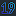

- Система торговли. SAYC
- Система торговли. Березка
- Конвенция «Римский Блэквуд» 1430
- Правила виста
- Стейман
- Трансфер Джакоби в мажоры
- Сплитнер
- Торговля Standard American Yellow Card system (SAYC)
- bridgeclub.ru SAYC(Mark London) в переводе Дмитрия Туревского
- acbl.org ACBL SAYC(rev. 2006)
- acbl.org ACBL SAYC(rev. 1988)
- acbl.org The ACBL SAYC Convention Card
- bridge2math.gatech.edu SAYC от Georgia Tech Оценка руки. bridge2math SAYC Convention Card
- gatech.edu презентация SAYC Giorgio Casinovi 347 pages
- bridgebum.com SAYC подробно с примерами
- bridgewebs.com Еще вариант SAYC
- rpbridge.net Pavlicek System свежак (февраль, 2019), близка к SAYC
- Конвенция Майклз
- STANDARD LEADS cheatsheet pdf
- LEADS
- Импас
- Таблица подсчета очков ACBL pdf в спортивном бридже
- https://www.bridgewebs.com/barnstaple/Tactics%20at%20Imps.htm
- https://www.pattayabridge.com/scoringweb.pdf
Bridge Base Online(BBO). Обучение, турниры, живые трансляции.
learn2playbridge - ACBL | Learn to Play Bridge
 EBU - English Bridge Union. Много информации. Бесплатный журнал.
EBU - English Bridge Union. Много информации. Бесплатный журнал.
SwanGames Links
rpbridge - Richard Pavlicek. Очень много полезного.
Eddie Kantar
ecatsbridge
 greatbridgelinks портал по бриджевой тематике
greatbridgelinks портал по бриджевой тематике
bridgeguys - очень много информации по теории.
RobinsBridge - живой блог. С примерами из BBO.
bridgewinners.com - агрегатор блогов
bridgeworld.com - журнал, с бесплатными ежемесячными тестами
Jeff Goldsmith's Home Page - много полезной информации. Есть скрипты и программы
Contract Bridge на сайте pagat.com
NY Times Bridge статьи по бриджу.
 skybridgeclub обучение (платное/бесплатное). Видео уроки. Программа.
skybridgeclub обучение (платное/бесплатное). Видео уроки. Программа.
Изображение игральных карт по лицензии Creative Commons
Инструментарий онлайн
saycbridge.com Тренажер посчета очков онлайн
ThomasoAndrews| Оценка руки по разным системам
RPBridge.net| Оценка руки по разным системам
Bridge Solver и проигрыватель pbn
- philallen.co.uk HTML5 проигрыватель pbn онлайн
Playbridge.com hand generator
Где играть онлайн
PlayOk Люди. Бесплатно.
Bridge Base Online Люди, роботы, обучение, турниры.
OKbridge Люди.
bridgeclublive можно играть с людьми.
 FunBridge Люди и роботы. Обучение. Турниры.
FunBridge Люди и роботы. Обучение. Турниры. GotoBridge Похоже, что тоже что и FunBridge
 ultimate-bridge Android, Facebook версии.
ultimate-bridge Android, Facebook версии.Microsoft play zone
Федерации
Бридж на русском
Московский клуб спортивного бриджа
BridgeClub. Словарь терминов [RU]
 Школа бриджа[RU] от преподавателей школы "Спутник"
Школа бриджа[RU] от преподавателей школы "Спутник"
 Бридж в Простоквашино - сайт команды "Дядя Федор".
Бридж в Простоквашино - сайт команды "Дядя Федор".
Бридж в Простоквашино - сайт команды "Дядя Федор".Теория на русском
- Как ходить из ТК
- Одвротка
- Бруштунов Простые маневры
- Вилка Мортона [ENG]
- Я люблю импасы
- Стейман
Программы и приложения
- Deep Finesse бесплатная
- Dealmaster Pro платная
- BridgeComposer 30 дней бесплатно.
- Hans van Staveren
- aaBridge. бесплатная
- Бридж преферанс студия автор Словеснов. Бесплатно.
Теория на английском
Видео на английском
Разработчику
- Отображение рук. Красиво.
- Векторные карты Свободная лицензия.
- Изображения игральных карт в формате svg и png
 Topic: bridge-game · GitHub
Topic: bridge-game · GitHub- jyaus/css-playing-cards: Playing cards using only CSS and Unicode characters
- pakastin/deck-of-cards: HTML5 Deck of Cards
- anntzer/redeal: A reimplementation of Thomas Andrews' Deal in Python.
- richardschneider/bridge: A javascript model for contract (duplicate) bridge
- selfthinker/CSS-Playing-Cards: Doc and example CSS Playing Cards help you to create simple and semantic playing cards in (X)HTML
- Программа DD SolverОписание алгоритма DDS pdf
Андрей Семенов aka Absolem © {{ new Date().getFullYear() }}